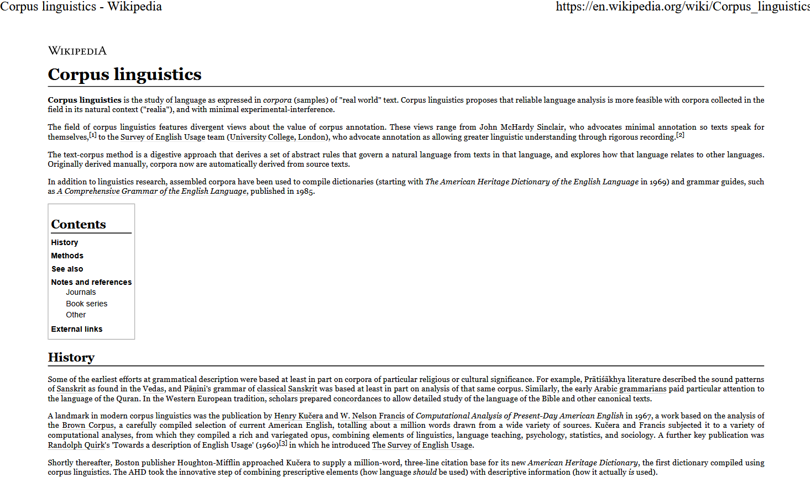

# set options
options(stringsAsFactors = F) # no automatic data transformation
options("scipen" = 100, "digits" = 12) # suppress math annotation
# install packages
install.packages("pdftools")
install.packages("tesseract")
install.packages("tidyverse")
install.packages("here")
install.packages("hunspell")
install.packages("flextable")
# install klippy for copy-to-clipboard button in code chunks
install.packages("remotes")
remotes::install_github("rlesur/klippy")Converting PDFs to txt files with R

Introduction
This tutorial shows how to extract text from one or more pdf-files using optical character recognition (OCR) and then saving the text(s) in txt-files on your computer.

This tutorial is aimed at beginners and intermediate users of R with the aim of showcasing how to convert pdfs into txt files using R. The aim is not to provide a fully-fledged analysis but rather to show and exemplify selected useful methods associated with extracting texts from pdfs.
This tutorial uses two packages for OCR and text extraction: pdftools which is very fast and is very recommendable when dealing with very legible and clean pdf-files (such as pdf-files of websites and books that were rendered directly from, e.g., word-documents, and the tesseract package which is slower but works much better when the data is unclean and represents, e.g., scans of books, faxes, or reports. In addition, we show how we can combine OCR with spell-checking via the hunspell package (see here for more information) when using the tesseract package (but this an also be done for any other textual data in R).
The entire R Notebook for the tutorial can be downloaded here. If you want to render the R Notebook on your machine, i.e. knitting the document to html or a pdf, you need to make sure that you have R and RStudio installed and you also need to download the bibliography file and store it in the same folder where you store the Rmd file.

Click here to open an interactive Jupyter notebook that allows you execute, change, and edit the code as well as upload your own data.
Preparation and session set up
This tutorial is based on R. If you have not installed R or are new to it, you will find an introduction to and more information how to use R here. For this tutorials, we need to install certain packages from an R library so that the scripts shown below are executed without errors. Before turning to the code below, please install the packages by running the code below this paragraph. If you have already installed the packages mentioned below, then you can skip ahead and ignore this section. To install the necessary packages, simply run the following code - it may take some time (between 1 and 5 minutes to install all of the libraries so you do not need to worry if it takes some time).
Next we activate the packages.
# activate packages
library(pdftools)
library(tesseract)
library(tidyverse)
library(here)
library(hunspell)
# set tesseract engine
eng <- tesseract("eng")
# activate klippy for copy-to-clipboard button
klippy::klippy()Once you have installed RStudio and have also initiated the session by executing the code shown above, you are good to go.
How to use the RNotebook for this tutorial
To follow this tutorial interactively (by using the RNotebook - or Rmd for short), follow the instructions listed below.
Data and folder set up
- Create a folder somewhere on your computer
- In that folder create a sub-folder called data
- In that data folder, create a subfolder called PDFs
- Download and save the following pdf-files in that PDFs folder: pdf0, pdf1, pdf2, and pdf3.
R and RStudio set up
- Download the RNotebook and save it in the folder you have just created
- Open RStudio
- Click on
Filein the upper left corner of the R Studio interface - Click on
New Project... - Select
Existing Directory - Browse to the folder you have just created and click on
Open - Now click on
Filesabove the lower right panel - Click on the file
pdf2txt.Rmd- The Markdown file of this tutorial should now be open in the upper left panel of RStudio. To execute the code which prepare the session, load the data, create the graphs, and perform the statistics, simply click on the green arrows in the top right corner of the code boxes.
- To render a PDF of this tutorial, simply click on
Knitabove the upper left panel in RStudio.
OCR with pdftools
Extract text from one pdf
The pdf we will convert is a pdf of the Wikipedia article about corpus linguistics. The first part of that pdf is shown below.

Given that the pdf contains tables, urls, reference, etc., the text that we will extract from the pdf will be rather messy - cleaning the content of the text would be another matter (it would be data processing rather than extraction) and we will thus only focus on the conversion process here and not focus on the data cleaning and processing aspect.
We begin the extraction by defining a path to the pdf. Once we have defined a path, i.e. where R is supposed to look for that file, we continue by extracting the text from the pdf.
# you can use an url or a path that leads to a pdf document
pdf_path <- "tutorials/pdf2txt/data/PDFs/pdf0.pdf"
# extract text
txt_output <- pdftools::pdf_text(pdf_path) %>%
paste0(collapse = " ") %>%
paste0(collapse = " ") %>%
stringr::str_squish(). |
|---|
Corpus linguistics - Wikipedia https://en.wikipedia.org/wiki/Corpus_linguistics Corpus linguistics Corpus linguistics is the study of language as expressed in corpora (samples) of "real world" text. Corpus linguistics proposes that reliable language analysis is more feasible with corpora collected in the field in its natural context ("realia"), and with minimal experimental-interference. The field of corpus linguistics features divergent views about the value of corpus annotation. These views range from John McHardy Sinclair, who advocates minimal annotation so texts speak for themselves,[1] to the Survey of English Usage team (University College, London), who advocate annotation as allowing greater linguistic understanding through rigorous recording.[2] The text-corpus method is a digestive approach that derives a set of abstract rules that govern a natural language from texts in that language, and explores how that language relates to other languages. Originally derived manually, cor |
Extracting text from many pdfs
To convert many pdf-files, we write a function that preforms the conversion for many documents.
convertpdf2txt <- function(dirpath) {
files <- list.files(dirpath, full.names = T)
x <- sapply(files, function(x) {
x <- pdftools::pdf_text(x) %>%
paste0(collapse = " ") %>%
stringr::str_squish()
return(x)
})
}We can now apply the function to the folder in which we have stored the pdf-files we want to convert. In the present case, I have stored 4 pdf-files of Wikipedia articles in a folder called PDFs which is located in my data folder as described in the section above which detailed how to set up the Rproject folder on your computer). The output is a vector with the texts of the pdf-files.
# apply function
txts <- convertpdf2txt(here::here("data", "PDFs/")). |
|---|
The table above shows the first 1000 characters of the texts extracted from 4 pdf-files of Wikipedia articles associated with language technology (corpus linguistics, linguistics, natural language processing, and computational linguistics).
Saving the texts
To save the texts in txt-files on your disc, you can simply replace the predefined location (the data folder of your Rproject located by the string here::here("data") with the folder where you want to store the txt-files and then execute the code below. Also, we will name the texts (or the txt-files if you like) as pdftext plus their index number.
# add names to txt files
names(txts) <- paste0(here::here("data", "pdftext"), 1:length(txts), sep = "")
# save result to disc
lapply(seq_along(txts), function(i) {
writeLines(
text = unlist(txts[i]),
con = paste(names(txts)[i], ".txt", sep = "")
)
})If you check the data folder in your Rproject folder, you should find 4 files called pdftext1, pdftext2, pdftext3, pdftext4.
OCR with tesseract
In this section, we use the tesseract package for OCR (see here for more information and a more thorough tutorial on usign the tesseract package). The tesseract package provides R bindings Tesseract: a powerful optical character recognition (OCR) engine that supports over 100 languages. The engine is highly configurable in order to tune the detection algorithms and obtain the best possible results.
We start by creating a vector of paths to the pdf-files that we want to extract the text from.
fls <- list.files(here::here("data/PDFs"), full.names = T)
# load
ocrs <- sapply(fls, function(x) {
# store name
nm <- stringr::str_replace_all(x, ".*/(.*?).pdf", "\\1")
# perform ocr
x <- tesseract::ocr(x, engine = eng) %>%
paste0(collapse = " ")
}). |
|---|
Although the results already look very promising, we want to see how we can combine automated spell-checking/correction with OCR as this is necessary when dealing with less pristine documents.
Spell correction
In a first step, we write a function that loops over each text and checks which words occur in a English language dictionary (which we do not specify as it is the default). This spell checking makes use of the the hunspell package (see here for more information). Hunspell is based on MySpell and is backward-compatible with MySpell and aspell dictionaries. This means that we can import and/or make use of many different language dictionaries and it is quite likely that the dictionaries for other languages may already available on your system!
# create token list
tokens_ocr <- sapply(ocrs, function(x) {
x <- hunspell::hunspell_parse(x)
}). |
|---|
In a next step, we can correct errors resulting from the OCR process, correct the errors and paste th texts back together (which is all done by the code chunk below).
# clean
clean_ocrtext <- sapply(tokens_ocr, function(x) {
correct <- hunspell::hunspell_check(x)
x <- ifelse(correct == F,
x[hunspell::hunspell_check(x)],
x
)
x <- paste0(x, collapse = " ")
}). |
|---|
We have reached the end of this tutorial and we hope that the tutoral helps you in performing OCR on your own pdfs.
Citation & Session Info
Schweinberger, Martin. 2023. Converting PDFs to txt files with R. Brisbane: The University of Queensland. url: https://ladal.edu.au/tutorials/pdf2txt.html (Version 2023.02.09).
@manual{schweinberger2023pdf2txt,
author = {Schweinberger, Martin},
title = {Converting PDFs to txt files with R},
note = {tutorials/pdf2txt/pdf2txt.html},
year = {2023},
organization = "The University of Queensland, Australia. School of Languages and Cultures},
address = {Brisbane},
edition = {2023.02.09}
}sessionInfo()R version 4.4.1 (2024-06-14)
Platform: aarch64-apple-darwin20
Running under: macOS Sonoma 14.6.1
Matrix products: default
BLAS: /Library/Frameworks/R.framework/Versions/4.4-arm64/Resources/lib/libRblas.0.dylib
LAPACK: /Library/Frameworks/R.framework/Versions/4.4-arm64/Resources/lib/libRlapack.dylib; LAPACK version 3.12.0
locale:
[1] en_US.UTF-8/en_US.UTF-8/en_US.UTF-8/C/en_US.UTF-8/en_US.UTF-8
time zone: Australia/Brisbane
tzcode source: internal
attached base packages:
[1] stats graphics grDevices utils datasets methods base
other attached packages:
[1] hunspell_3.0.5 here_1.0.1 lubridate_1.9.3 forcats_1.0.0
[5] stringr_1.5.1 dplyr_1.1.4 purrr_1.0.2 readr_2.1.5
[9] tidyr_1.3.1 tibble_3.2.1 ggplot2_3.5.1 tidyverse_2.0.0
[13] tesseract_5.2.2 pdftools_3.4.1
loaded via a namespace (and not attached):
[1] rappdirs_0.3.3 utf8_1.2.4 generics_0.1.3
[4] fontLiberation_0.1.0 xml2_1.3.6 stringi_1.8.4
[7] hms_1.1.3 digest_0.6.37 magrittr_2.0.3
[10] evaluate_1.0.1 grid_4.4.1 timechange_0.3.0
[13] flextable_0.9.7 fastmap_1.2.0 rprojroot_2.0.4
[16] jsonlite_1.8.9 zip_2.3.1 fansi_1.0.6
[19] scales_1.3.0 fontBitstreamVera_0.1.1 textshaping_0.4.0
[22] klippy_0.0.0.9500 codetools_0.2-20 cli_3.6.3
[25] fontquiver_0.2.1 rlang_1.1.4 munsell_0.5.1
[28] withr_3.0.2 yaml_2.3.10 gdtools_0.4.0
[31] officer_0.6.7 tools_4.4.1 uuid_1.2-1
[34] tzdb_0.4.0 colorspace_2.1-1 assertthat_0.2.1
[37] vctrs_0.6.5 R6_2.5.1 lifecycle_1.0.4
[40] htmlwidgets_1.6.4 ragg_1.3.3 pkgconfig_2.0.3
[43] pillar_1.9.0 gtable_0.3.6 data.table_1.16.2
[46] glue_1.8.0 Rcpp_1.0.13 systemfonts_1.1.0
[49] xfun_0.49 tidyselect_1.2.1 knitr_1.48
[52] htmltools_0.5.8.1 rmarkdown_2.28 qpdf_1.3.4
[55] compiler_4.4.1 askpass_1.2.1 openssl_2.2.2